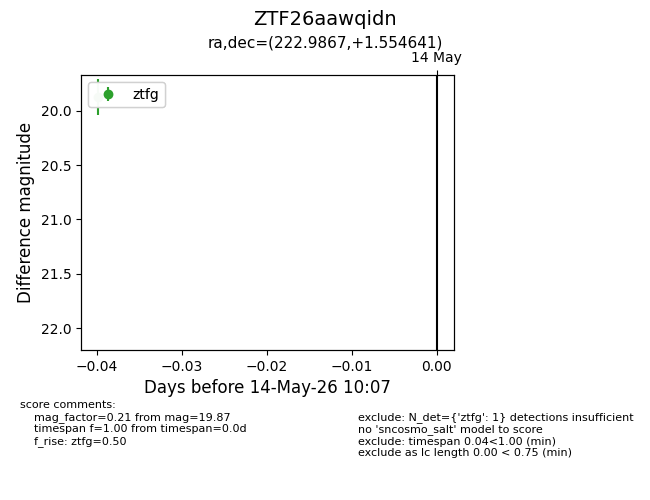
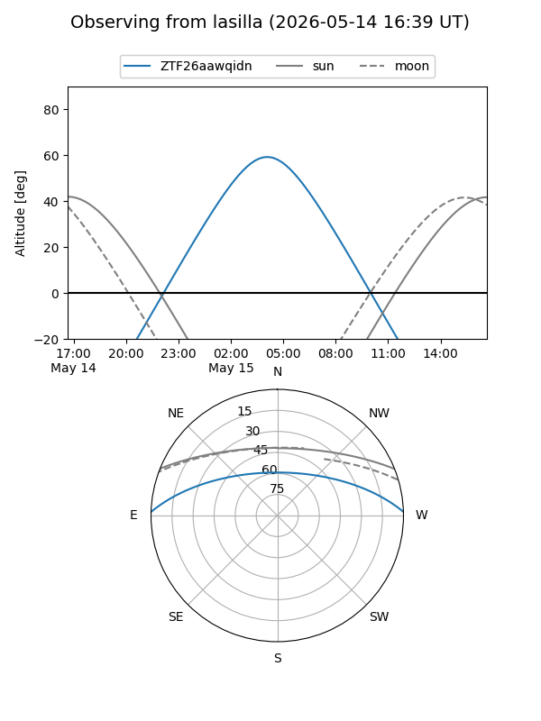
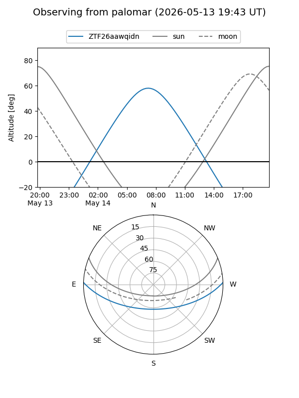

ZTF26aawqidn
Target ZTF26aawqidn at 2026-05-14 10:08
Aliases and brokers:
FINK: link
Lasair: link
ALeRCE: link
alt names
ZTF26aawqidn (ztf,fink_ztf)
Coordinates:
equatorial (ra, dec) = 222.9867,+1.55464
equatorial (HMS+DMS) = 14:51:56.81,+01:33:16.71
galactic (l, b) = (356.5184,+51.43025)
Flags:
Photometry:
last ztfg=19.87
1 ztfg detections
Lightcurve

Visibility


Additional plots